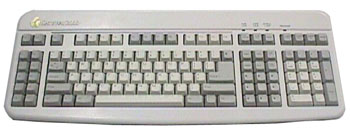
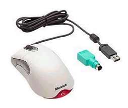

Input Devices

Input
devices give a computer new
information. They help the computer learn about the outside world, learn the wishes of the user (you), or learn what another computer knows.

Two basic input devices are the keyboard and mouse